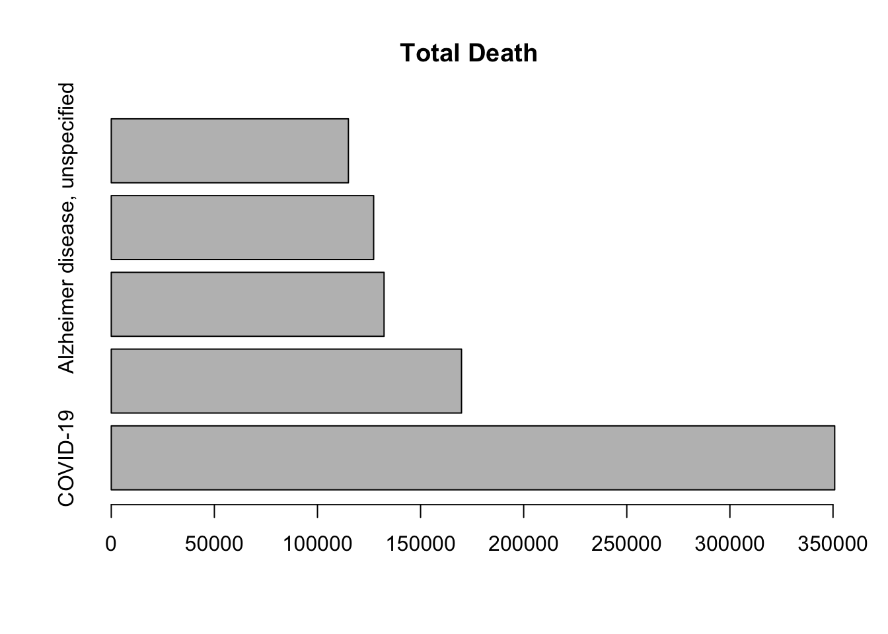
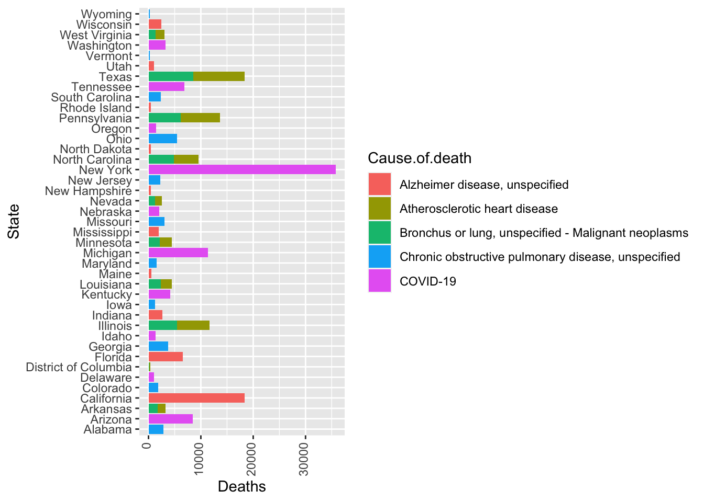
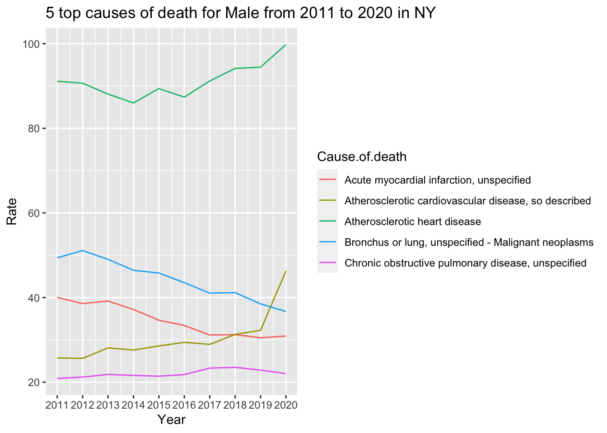
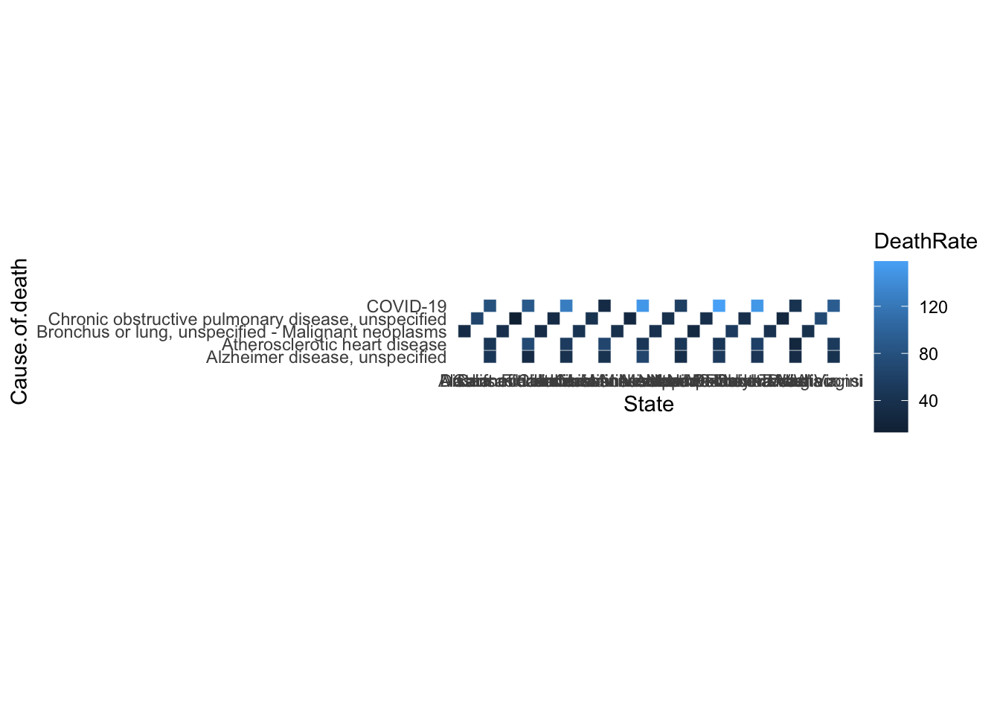

Chapter 5 Results
5.1 Question 1: What are the top 5 causes of death in our mortality dataset compared to the top 10 causes of death online or in common sense?

## State
## Alabama "Alabama"
## Arizona "Arizona"
## Arkansas "Arkansas"
## California "California"
## Colorado "Colorado"
## Delaware "Delaware"
## District of Columbia "District of Columbia"
## Florida "Florida"
## Georgia "Georgia"
## Idaho "Idaho"
## Illinois "Illinois"
## Indiana "Indiana"
## Iowa "Iowa"
## Kentucky "Kentucky"
## Louisiana "Louisiana"
## Maine "Maine"
## Maryland "Maryland"
## Michigan "Michigan"
## Minnesota "Minnesota"
## Mississippi "Mississippi"
## Missouri "Missouri"
## Nebraska "Nebraska"
## Nevada "Nevada"
## New Hampshire "New Hampshire"
## New Jersey "New Jersey"
## New York "New York"
## North Carolina "North Carolina"
## North Dakota "North Dakota"
## Ohio "Ohio"
## Oregon "Oregon"
## Pennsylvania "Pennsylvania"
## Rhode Island "Rhode Island"
## South Carolina "South Carolina"
## Tennessee "Tennessee"
## Texas "Texas"
## Utah "Utah"
## Vermont "Vermont"
## Washington "Washington"
## West Virginia "West Virginia"
## Wisconsin "Wisconsin"
## Wyoming "Wyoming"
## Cause.of.death
## Alabama "Chronic obstructive pulmonary disease, unspecified"
## Arizona "COVID-19"
## Arkansas "Bronchus or lung, unspecified - Malignant neoplasms"
## California "Alzheimer disease, unspecified"
## Colorado "Chronic obstructive pulmonary disease, unspecified"
## Delaware "COVID-19"
## District of Columbia "Atherosclerotic heart disease"
## Florida "Alzheimer disease, unspecified"
## Georgia "Chronic obstructive pulmonary disease, unspecified"
## Idaho "COVID-19"
## Illinois "Atherosclerotic heart disease"
## Indiana "Alzheimer disease, unspecified"
## Iowa "Chronic obstructive pulmonary disease, unspecified"
## Kentucky "COVID-19"
## Louisiana "Bronchus or lung, unspecified - Malignant neoplasms"
## Maine "Alzheimer disease, unspecified"
## Maryland "Chronic obstructive pulmonary disease, unspecified"
## Michigan "COVID-19"
## Minnesota "Atherosclerotic heart disease"
## Mississippi "Alzheimer disease, unspecified"
## Missouri "Chronic obstructive pulmonary disease, unspecified"
## Nebraska "COVID-19"
## Nevada "Atherosclerotic heart disease"
## New Hampshire "Alzheimer disease, unspecified"
## New Jersey "Chronic obstructive pulmonary disease, unspecified"
## New York "COVID-19"
## North Carolina "Bronchus or lung, unspecified - Malignant neoplasms"
## North Dakota "Alzheimer disease, unspecified"
## Ohio "Chronic obstructive pulmonary disease, unspecified"
## Oregon "COVID-19"
## Pennsylvania "Atherosclerotic heart disease"
## Rhode Island "Alzheimer disease, unspecified"
## South Carolina "Chronic obstructive pulmonary disease, unspecified"
## Tennessee "COVID-19"
## Texas "Atherosclerotic heart disease"
## Utah "Alzheimer disease, unspecified"
## Vermont "Chronic obstructive pulmonary disease, unspecified"
## Washington "COVID-19"
## West Virginia "Atherosclerotic heart disease"
## Wisconsin "Alzheimer disease, unspecified"
## Wyoming "Chronic obstructive pulmonary disease, unspecified"
## Deaths
## Alabama 2871
## Arizona 8447
## Arkansas 1767
## California 18333
## Colorado 1867
## Delaware 1008
## District of Columbia 193
## Florida 6598
## Georgia 3759
## Idaho 1358
## Illinois 6190
## Indiana 2675
## Iowa 1225
## Kentucky 4132
## Louisiana 2307
## Maine 560
## Maryland 1501
## Michigan 11391
## Minnesota 2346
## Mississippi 1965
## Missouri 3000
## Nebraska 2043
## Nevada 1269
## New Hampshire 474
## New Jersey 2205
## New York 35736
## North Carolina 4872
## North Dakota 405
## Ohio 5497
## Oregon 1434
## Pennsylvania 7422
## Rhode Island 482
## South Carolina 2365
## Tennessee 6838
## Texas 9882
## Utah 1071
## Vermont 202
## Washington 3284
## West Virginia 1764
## Wisconsin 2442
## Wyoming 291
The top five disease that lead to death is “COVID-19”, “Atherosclerotic heart disease”, “Bronchus or lung, unspecified - Malignant neoplasms”, “Alzheimer disease, unspecified”, “Chronic obstructive pulmonary disease, unspecified” . The top five state that have most death is California, Texas, Florida, New York, Pennsylvanina
5.2 Question 2: What are the growth rates for these 5 causes of deaths for different identity groups in New York State for the previous 10 years?
5.2.2 Male top 5 causes of death trend
For both male and female, Atherosclerotic heart disease is the top one cause of death. For female, unspecified dementia was in an increasing trend in the past 10 years. For male, “Atherosclerotic cardiovascular disease, so described” was increasing drastically in year 2019 and 2020. Also, although death rate of “Chronic obstructive pulmonary disease, unspecified M” is not as high as other top 4 causes of death, this still has above 20 per 100,000 of death rate, which all the humanbeings need to be careful about that.
5.3 Question 3: What is the top 5 cause of death and what is the spread of this disease in the U.S by state in 2020?

## State
## Alabama "Alabama"
## Arizona "Arizona"
## Arkansas "Arkansas"
## California "California"
## Colorado "Colorado"
## Delaware "Delaware"
## District of Columbia "District of Columbia"
## Florida "Florida"
## Georgia "Georgia"
## Idaho "Idaho"
## Illinois "Illinois"
## Indiana "Indiana"
## Iowa "Iowa"
## Kentucky "Kentucky"
## Louisiana "Louisiana"
## Maine "Maine"
## Maryland "Maryland"
## Michigan "Michigan"
## Minnesota "Minnesota"
## Mississippi "Mississippi"
## Missouri "Missouri"
## Nebraska "Nebraska"
## Nevada "Nevada"
## New Hampshire "New Hampshire"
## New Jersey "New Jersey"
## New York "New York"
## North Carolina "North Carolina"
## North Dakota "North Dakota"
## Ohio "Ohio"
## Oregon "Oregon"
## Pennsylvania "Pennsylvania"
## Rhode Island "Rhode Island"
## South Carolina "South Carolina"
## Tennessee "Tennessee"
## Texas "Texas"
## Utah "Utah"
## Vermont "Vermont"
## Washington "Washington"
## West Virginia "West Virginia"
## Wisconsin "Wisconsin"
## Wyoming "Wyoming"
## Cause.of.death
## Alabama "Chronic obstructive pulmonary disease, unspecified"
## Arizona "COVID-19"
## Arkansas "Bronchus or lung, unspecified - Malignant neoplasms"
## California "Alzheimer disease, unspecified"
## Colorado "Chronic obstructive pulmonary disease, unspecified"
## Delaware "COVID-19"
## District of Columbia "Atherosclerotic heart disease"
## Florida "Alzheimer disease, unspecified"
## Georgia "Chronic obstructive pulmonary disease, unspecified"
## Idaho "COVID-19"
## Illinois "Atherosclerotic heart disease"
## Indiana "Alzheimer disease, unspecified"
## Iowa "Chronic obstructive pulmonary disease, unspecified"
## Kentucky "COVID-19"
## Louisiana "Bronchus or lung, unspecified - Malignant neoplasms"
## Maine "Alzheimer disease, unspecified"
## Maryland "Chronic obstructive pulmonary disease, unspecified"
## Michigan "COVID-19"
## Minnesota "Atherosclerotic heart disease"
## Mississippi "Alzheimer disease, unspecified"
## Missouri "Chronic obstructive pulmonary disease, unspecified"
## Nebraska "COVID-19"
## Nevada "Atherosclerotic heart disease"
## New Hampshire "Alzheimer disease, unspecified"
## New Jersey "Chronic obstructive pulmonary disease, unspecified"
## New York "COVID-19"
## North Carolina "Bronchus or lung, unspecified - Malignant neoplasms"
## North Dakota "Alzheimer disease, unspecified"
## Ohio "Chronic obstructive pulmonary disease, unspecified"
## Oregon "COVID-19"
## Pennsylvania "Atherosclerotic heart disease"
## Rhode Island "Alzheimer disease, unspecified"
## South Carolina "Chronic obstructive pulmonary disease, unspecified"
## Tennessee "COVID-19"
## Texas "Atherosclerotic heart disease"
## Utah "Alzheimer disease, unspecified"
## Vermont "Chronic obstructive pulmonary disease, unspecified"
## Washington "COVID-19"
## West Virginia "Atherosclerotic heart disease"
## Wisconsin "Alzheimer disease, unspecified"
## Wyoming "Chronic obstructive pulmonary disease, unspecified"
## DeathRate
## Alabama 58.33549
## Arizona 113.8195
## Arkansas 58.30679
## California 46.56819
## Colorado 32.14687
## Delaware 102.1474
## District of Columbia 27.07571
## Florida 30.35893
## Georgia 35.09798
## Idaho 74.33304
## Illinois 49.17565
## Indiana 39.60057
## Iowa 38.72219
## Kentucky 92.28877
## Louisiana 49.66291
## Maine 41.47715
## Maryland 24.78615
## Michigan 114.2923
## Minnesota 41.46824
## Mississippi 66.23329
## Missouri 48.76821
## Nebraska 105.4423
## Nevada 40.43643
## New Hampshire 34.69287
## New Jersey 24.82445
## New York 184.8085
## North Carolina 45.9587
## North Dakota 52.9198
## Ohio 47.01016
## Oregon 33.80874
## Pennsylvania 58.06033
## Rhode Island 45.59536
## South Carolina 45.32353
## Tennessee 99.29091
## Texas 33.65717
## Utah 32.95507
## Vermont 32.40571
## Washington 42.68476
## West Virginia 98.83532
## Wisconsin 41.86773
## Wyoming 49.97184The top five disease that lead to highest death rate is “COVID-19”, “Atherosclerotic heart disease”, “Bronchus or lung, unspecified - Malignant neoplasms”, “Alzheimer disease, unspecified”, “Chronic obstructive pulmonary disease, unspecified”, which is same as previous. The top five state that have most death is West Virginia, Mississippi, Alabama, Ohio, Pennsylvanina

The highest death and highest death rate is different.
5.4 Question 4: What is the decision tree of locations, race, gender for top 1 causes of death?
5.4.2 Build the decision tree based on previous finding
##
## 10027657 10068259 10487157 1062819 10648149 107024 109108110 11118443
## 1 1 1 1 1 1 1 1
## 11134945 1118506 11217100 1145819 11476326 11512428 116215337 116664300
## 1 1 1 1 1 1 1 1
## 11667116 11763039 1190870 11977117 120101023 12253357 122543006 122595575
## 1 1 1 1 1 1 1 1
## 12270170 124782 12519689 1255727 127192324 12719668 127895148 128214364
## 1 1 1 1 1 1 1 1
## 129787249 12989759 129949399 1305467 13099752 131659126 13301404 13417190
## 1 1 1 1 1 1 1 1
## 1349494 13755666 13841334 13883712 14444657 14674352 150891 1522673
## 1 1 1 1 1 1 1 1
## 1552157 155520 156431 15677387 15990292 1602125 1613064 1634175
## 1 1 1 1 1 1 1 1
## 1682671 1706953 172816 1748655 1801239 18111755 1823043 1833653
## 1 1 1 1 1 1 1 1
## 1836909 1852670 190995 19859 2033547 2065959 2093299 212628
## 1 1 1 1 1 1 1 1
## 21463833 21514 21681707 226863 2286436 2321508 23286456 23343193
## 1 1 1 1 1 1 1 1
## 2370464 244591 2454050 245737 2463488 25848082 2596117 26162528
## 1 1 1 1 1 1 1 1
## 2625430 2758875 2791778 2806790 286489 287601 29988649 30054832
## 1 1 1 1 1 1 1 1
## 300786 3068725 30963160 316032 320548 32290881 3255967 3256082
## 1 1 1 1 1 1 1 1
## 3286340 3293578 341925 3455978 34619771 34777904 3489702 351846
## 1 1 1 1 1 1 1 1
## 357849 36056508 3619798 3630379 3675517 37112297 37544294 3783239
## 1 1 1 1 1 1 1 1
## 38132105 38292 3926764 3966933 40017319 4053454 40876950 41062015
## 1 1 1 1 1 1 1 1
## 41076880 4120310 432011 43823608 44019 44074459 4675856 469501
## 1 1 1 1 1 1 1 1
## 47054368 472864 478883 48697973 4925237 4948207 4970834 504796
## 1 1 1 1 1 1 1 1
## 5074053 5116148 516439 519996 525583 53182087 53893370 5459005
## 1 1 1 1 1 1 1 1
## 5561154 556378 56635 5689182 5690434 5770725 58492518 600005
## 1 1 1 1 1 1 1 1
## 60315135 60928212 61387291 6150680 62299504 6247023 62858 63469016
## 1 1 1 1 1 1 1 1
## 6429130 6474853 6511677 653593 6556602 66045342 6645617 66579805
## 1 1 1 1 1 1 1 1
## 6675303 68787692 6906149 6974042 7008403 70088892 71415061 7201283
## 1 1 1 1 1 1 1 1
## 72185389 7229480 728640 7355449 73960359 75248066 7589515 76690763
## 1 1 1 1 1 1 1 1
## 775513 7772227 77724845 782963 793815 8018090 80449227 807066
## 1 1 1 1 1 1 1 1
## 82236096 82297881 8279050 8336679 83381041 83717 84344339 8437871
## 1 1 1 1 1 1 1 1
## 84551821 84777292 85101839 85324129 85613632 86078604 86137473 8734100
## 1 1 1 1 1 1 1 1
## 87382 877500 87930569 883898 88458701 886684 88817065 89111557
## 1 1 1 1 1 1 1 1
## 893897 89975 905134 91241026 9232177 92434314 938294 942586
## 1 1 1 1 1 1 1 1
## 94854 965038 9726071 974430 990119
## 1 1 1 1 1##
## High Low Medium
## 0.06349206 0.51851852 0.41798942